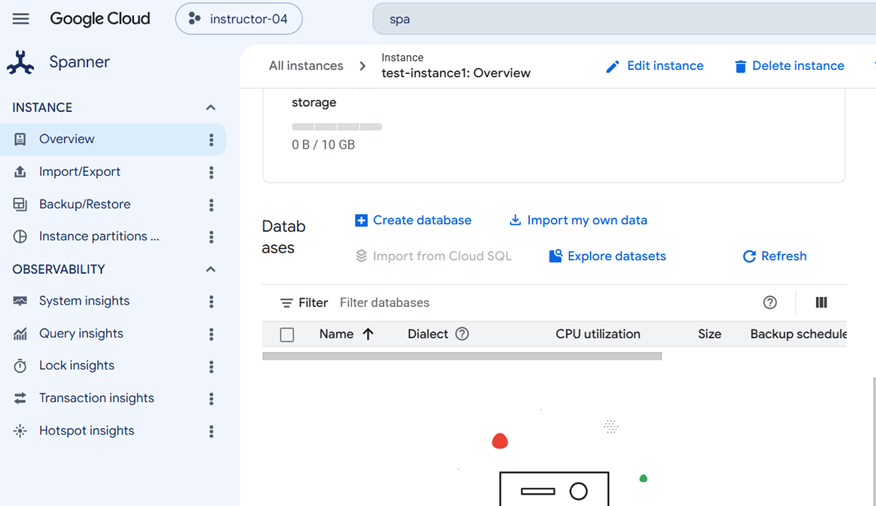
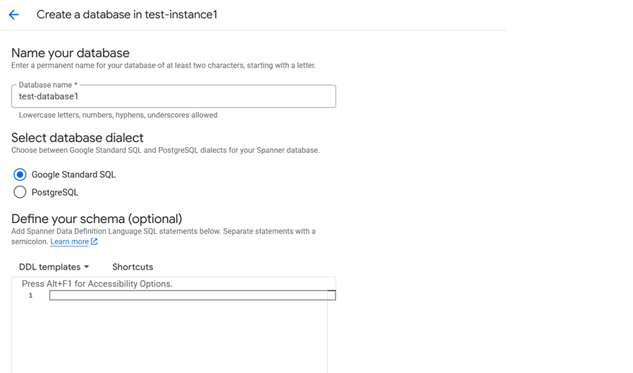
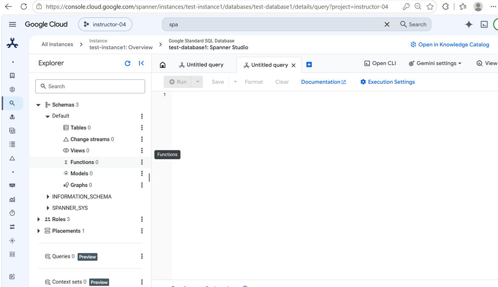
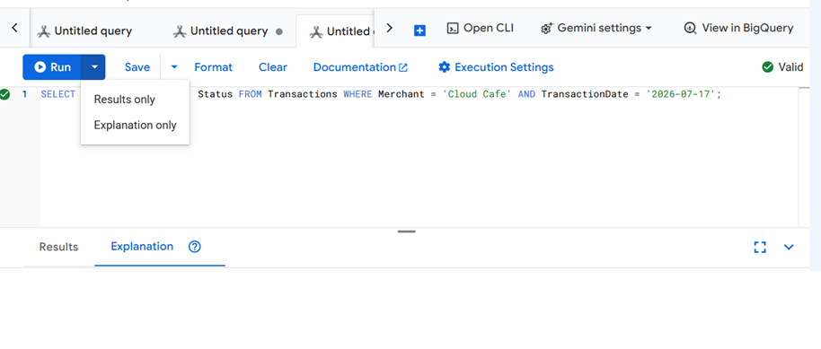
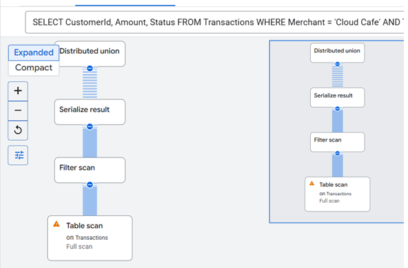
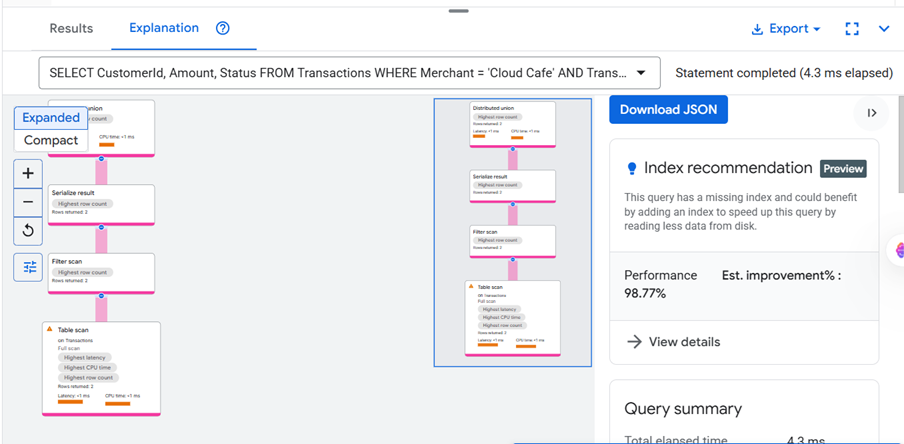
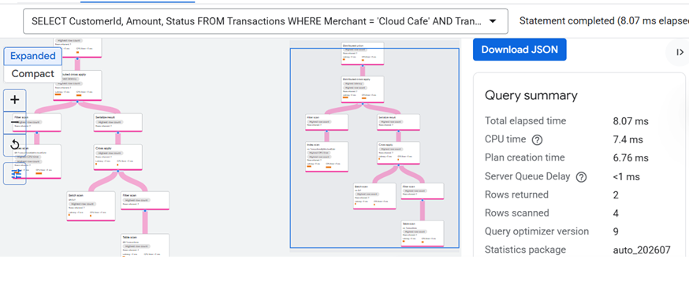
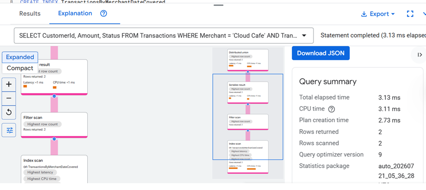

Profiling Query Executions & Optimizing with Covered Indexes
Welcome! In this hands-on lab, you will learn how to analyze slow-running queries using Spanner's Query Execution Plan, identify performance bottlenecks like full table scans and back-joins, and optimize latency using storing secondary indexes.
What is an Execution Plan?
Before running an SQL query, Google Cloud Spanner compiles it into an **Execution Plan**. The plan is a tree structure composed of database operators (like *Distributed Union*, *Index Scan*, or *Hash Join*). Examining this plan helps developers understand exactly how Spanner partitions and queries tables across servers.
Rather than guessing why a query runs slowly, we can profile it using the command-line flag --query-mode=PROFILE, which prints actual diagnostic statistics (CPU execution time, data rows scanned, and memory footprint) alongside the plan nodes.
-
Understand query tuning concepts Review how query profiling highlights execution bottlenecks in distributed databases.
Set Up Your Spanner Instance
Before running SQL queries you need a live Google Cloud Spanner instance and database. Follow these steps to provision your environment in the Google Cloud Console.
Step 1 — Open Google Cloud Console
Open your browser and navigate to the Google Cloud Console. Sign in with your company email address and password.
https://console.cloud.google.comOnce logged in, click the project selector at the top (shown as the project name next to the Google Cloud logo) and choose the project assigned to you by the instructor.
Step 2 — Open Cloud Spanner
In the top search bar, type Spanner and click Cloud Spanner from the results.
https://console.cloud.google.com/spannerStep 3 — Create the Free Instance
The Spanner home page shows a free trial banner — "Experience Spanner free for 90 days with no commitment". Fill in the form fields exactly as shown below and click Create free instance.
 GCP Console — Spanner free trial form. Fill in the fields as shown and click "Create free instance".
GCP Console — Spanner free trial form. Fill in the fields as shown and click "Create free instance".
Instance name : test-instance1
Instance ID : test-instance1
Select a configuration: asia-south1 (Mumbai)Click Create free instance. The instance will be provisioned in about 30–60 seconds and you will be redirected to the test-instance1 overview page.
Step 4 — Create a Database
On the test-instance1 overview page, find the Databases section and click "+ Create database". Fill in the following settings:
Database name : test-database1
Database dialect : Google Standard SQL
GCP Console — Create Database form. Enter the database name, select Google Standard SQL dialect, and click Create.Leave the DDL statements field empty — tables are created in the next step. Click Create. You will land on the test-database1 overview page.
test-database1 shows Overview, Tables, Spanner Studio, and other sections in the left navigation panel.
GCP Console — Database overview for test-database1. You will see Spanner Studio in the left navigation.Step 5 — Open Spanner Studio
In the left-side navigation of the database overview, click "Spanner Studio". Then click the "+ New SQL Editor Tab" button to open a blank query editor tab.

GCP Console — Spanner Studio. Click "+ New SQL Editor Tab" to open a blank query editor.-
Create Spanner instance
test-instance1Use the free trial form to provision instance test-instance1 in asia-south1 (Mumbai). -
Create database
test-database1Create a Google Standard SQL dialect database inside your new instance. -
Open Spanner Studio and create a new SQL Editor tab Navigate to Spanner Studio from the database overview and open a new query editor tab.
Step 1: Setting Up the Test Scenario
Setup Parent Tables Mandatory
Before deploying the Transactions table you must create the parent Customers table (and its child Orders / OrderItems hierarchy). Spanner enforces interleave integrity — a child insert without its parent will fail immediately.
1. Create the parent tables
CREATE TABLE Customers (
CustomerId INT64 NOT NULL,
Name STRING(255),
Email STRING(255),
Country STRING(100)
) PRIMARY KEY (CustomerId);
CREATE TABLE Orders (
CustomerId INT64 NOT NULL,
OrderId INT64 NOT NULL,
OrderDate DATE,
TotalAmount NUMERIC
) PRIMARY KEY (CustomerId, OrderId),
INTERLEAVE IN PARENT Customers ON DELETE CASCADE;
CREATE TABLE OrderItems (
CustomerId INT64 NOT NULL,
OrderId INT64 NOT NULL,
OrderItemId INT64 NOT NULL,
ProductId INT64,
Quantity INT64,
Price NUMERIC
) PRIMARY KEY (CustomerId, OrderId, OrderItemId),
INTERLEAVE IN PARENT Orders ON DELETE CASCADE;2. Insert a parent customer
INSERT INTO Customers (CustomerId, Name, Email, Country)
VALUES (101, 'Alice Smith', 'alice@email.com', 'Germany');3. Insert a parent order
INSERT INTO Orders (CustomerId, OrderId, OrderDate, TotalAmount)
VALUES (101, 5001, '2026-07-17', 150.00);4. Insert an order item
INSERT INTO OrderItems (CustomerId, OrderId, OrderItemId, ProductId, Quantity, Price)
VALUES (101, 5001, 1, 9901, 2, 75.00);Let's define a new interleaved table named Transactions to record card purchases. Deploy this schema definition onto your active emulator instance.
1. Deploy the DDL Schema
Execute the DDL in Spanner Studio to create the Transactions table. Note that it is interleaved under Customers (reusing our Customer hierarchy from the previous step):
CREATE TABLE Transactions (
CustomerId INT64 NOT NULL,
TransactionId INT64 NOT NULL,
TransactionDate DATE,
Amount NUMERIC,
Merchant STRING(255),
Status STRING(50)
) PRIMARY KEY (CustomerId, TransactionId),
INTERLEAVE IN PARENT Customers ON DELETE CASCADE;2. Populate Transaction Records
Let's add test transactions to query against:
INSERT INTO Transactions (CustomerId, TransactionId, TransactionDate, Amount, Merchant, Status)
VALUES
(101, 8001, '2026-07-17', 24.50, 'Cloud Cafe', 'COMPLETED'),
(101, 8002, '2026-07-17', 120.00, 'Cloud Cafe', 'COMPLETED'),
(101, 8003, '2026-07-16', 55.00, 'GCP Shop', 'COMPLETED'),
(101, 8004, '2026-07-15', 10.00, 'Cloud Cafe', 'FAILED');-
Deploy the Transactions table Configure the interleaved transactions schema using the DDL tool.
-
Populate sample transactions Insert rows into the Transactions table linked to Customer 101.
Step 2: Profiling the Naive Query
Imagine your user dashboard queries the transactions table to list all successful purchases at `'Cloud Cafe'` on a specific date:
SELECT CustomerId, Amount, Status FROM Transactions WHERE Merchant = 'Cloud Cafe' AND TransactionDate = '2026-07-17'
1. Run the Query in Explanation Only Mode
Paste the query below into your Spanner Studio editor tab. Before clicking Run, switch the execution mode to Explanation Only — this tells Spanner to compile the query and return the execution plan without scanning any data rows, so you can diagnose performance issues safely.
SELECT CustomerId, Amount, Status
FROM Transactions
WHERE Merchant = 'Cloud Cafe'
AND TransactionDate = '2026-07-17';
Spanner Studio — Select "Explanation Only" from the Run dropdown to view the query execution plan without scanning data.2. Analyze the Explanation
After clicking Explanation Only, the Explanation tab opens with a visual query plan. Because the query filters on Merchant and TransactionDate — neither of which is the primary key nor covered by any secondary index — Spanner has no shortcut. It falls back to a full table scan, reading every row in Transactions before applying the filter.

Spanner Studio Explanation tab — the plan shows a Table Scan onTransactions, confirming no index is used.
The key operator to spot in the plan is Table Scan on the Transactions table, which appears because:
- The primary key of
Transactionsis(CustomerId, TransactionId)— the WHERE clause does not filter by primary key columns. - There is no secondary index on
MerchantorTransactionDateyet. - Spanner therefore reads the entire table to find matching rows.
Merchant and TransactionDate, Spanner must scan every row in Transactions on every query execution. In a table with millions of rows, this means heavy CPU usage, high read latency, and wasted I/O — all for a query that should return a handful of rows.-
Run the query in Explanation Only mode Select "Explanation Only" from the Run dropdown and confirm the Explanation tab opens.
-
Identify the Table Scan operator Locate the Table Scan step in the plan and confirm no index is being used.
3. Run the Query and Observe Real Performance
Now switch back to the normal Run mode (no Explanation Only) and execute the same query. This time Spanner will actually scan the table and return matching rows, so you can see the real elapsed time and row statistics in the results pane.
SELECT CustomerId, Amount, Status
FROM Transactions
WHERE Merchant = 'Cloud Cafe'
AND TransactionDate = '2026-07-17';
Spanner Studio — Results tab after running the query in normal mode. Note the elapsed time and the number of rows scanned versus rows returned.- All rows scanned, few rows returned — Spanner read every row in the
Transactionstable but returned only the handful that matched the filter. The ratio of rows scanned to rows returned is very high, which is a classic symptom of a missing index. - High latency relative to result size — The elapsed time is disproportionate to the number of matching rows, because the cost is driven by the full table scan rather than the result set size.
- No index used — The Explanation tab confirms the plan uses a Table Scan operator rather than an Index Scan. This is the root cause of the slow performance.
- This gets worse at scale — With millions of rows the same query would take orders of magnitude longer and consume far more CPU, making it unsuitable for a user-facing dashboard.
-
Run the query in normal mode Confirm the results return and note the elapsed time shown at the bottom of the results pane.
-
Note the performance bottleneck Record the high rows-scanned-to-rows-returned ratio as evidence that a covering index is needed.
Step 3: Diagnosing Back-Join Bottlenecks
Let's add a standard secondary index to speed up the query filtering. We will then analyze the new execution plan to identify any remaining bottlenecks.
1. Create a Standard Secondary Index
Run the following DDL in Spanner Studio to deploy a standard index on Merchant and TransactionDate:
CREATE INDEX TransactionsByMerchantDate ON Transactions(Merchant, TransactionDate);2. Run the Query Again and Check the Execution Plan
Paste the same query into Spanner Studio and run it with Explanation Only mode to see how the plan has changed now that the index exists:
SELECT CustomerId, Amount, Status
FROM Transactions
WHERE Merchant = 'Cloud Cafe'
AND TransactionDate = '2026-07-17';3. Examine the Back-Join (Key Lookup) Plan
Review the Explanation tab in Spanner Studio. Although the full table scan is now gone — Spanner is using the new index — you will notice a second operator has appeared: a Key Lookup back to the primary table. This is because Amount and Status are not stored in the index, so Spanner must go back to the base table to fetch them for every matching index row.

Spanner Studio Explanation tab — Index Scan onTransactionsByMerchantDate is now used, but a Key Lookup (back-join) is still required to fetch Amount and Status from the base table.
Key operators to spot in the plan:
- Index Scan on
TransactionsByMerchantDate— good, the filter onMerchantandTransactionDateis now satisfied by the index instead of a full table scan. - Key Lookup / Distributed Cross Apply — Spanner takes each index row's primary key and issues a separate lookup back into the
Transactionsbase table to retrieveAmountandStatus, which are not stored in the index. - Two storage accesses per matching row — one index read plus one base-table read. At scale this doubles the I/O and introduces cross-node latency for each row.
Merchant = 'Cloud Cafe'. However, because the index does not contain the Amount and Status columns, Spanner must perform a back-join to fetch those values from the primary table for every matching row. At scale — millions of transactions — this back-join cross-node lookup becomes a major performance bottleneck, adding latency and consuming extra CPU even though the index itself is efficient.-
Deploy the standard index Verify that the standard index on Merchant and TransactionDate is created.
-
Identify the Key Lookup step Locate the Distributed Cross Apply and Key Lookup operators in the query profile output.
Step 4: Deploying a Storing Covered Index
To eliminate the back-join, we will replace the standard index with a **Storing Covered Index**. This copies the query's returned columns directly into the secondary index table.
1. Drop the Standard Index
Run the following DDL in Spanner Studio to remove the suboptimal standard index first:
DROP INDEX TransactionsByMerchantDate;2. Create the Storing Covered Index
Create a new index on the filter columns (Merchant, TransactionDate) and store the returned columns Amount and Status using the STORING clause:
CREATE INDEX TransactionsByMerchantDateCovered
ON Transactions(Merchant, TransactionDate)
STORING (Amount, Status);-
Drop the standard index Remove the TransactionsByMerchantDate index.
-
Deploy the Storing Covered Index Deploy the new index using the STORING clause to include Amount and Status values.
Step 5: Verifying the Optimization
Now, let's profile the query again to verify that the back-join is gone and the execution plan is optimized.
1. Run the Query Again in Explanation Only Mode
Paste the same query into Spanner Studio, select Explanation Only, and run it one final time to confirm the back-join has been eliminated:
SELECT CustomerId, Amount, Status
FROM Transactions
WHERE Merchant = 'Cloud Cafe'
AND TransactionDate = '2026-07-17';2. Analyze the Final Execution Plan
Review the Explanation tab in Spanner Studio. Compare this plan with what you saw in the previous two steps — the improvement should be clearly visible:

Spanner Studio Explanation tab — a single Index Scan onTransactionsByMerchantDateCovered. No Table Scan. No Key Lookup.
Key differences from the earlier plans:
- No Table Scan — the full table scan from Step 2 is completely gone.
- No Key Lookup / Back-Join — the Distributed Cross Apply and Key Lookup operators from Step 3 are eliminated. Spanner no longer needs to go back to the base table.
- Single Index Scan only — Spanner reads
TransactionsByMerchantDateCoveredonce and retrievesCustomerId,Amount, andStatusdirectly from the index because they are stored in the STORING clause. - One storage access per query — down from two (index + base table). This halves the I/O and removes the cross-node latency of the back-join entirely.
CustomerId, Amount, and Status — directly from the covering index in a single scan, achieving sub-millisecond query latency regardless of how large the Transactions table grows.-
Run the query in Explanation Only mode Verify that the execution plan uses only an Index Scan and has no Key Lookup step.
-
Compare performance stats Review the reduction in CPU execution time and rows scanned.
Step 6: Knowledge Check
Complete this quick self-check to evaluate your understanding of query profiling and covered index optimization.
-
Complete all quiz questions Answer all three multiple-choice questions correctly to unlock the certificate screen.
Lab Certificate of Completion
Once you complete the required tasks and pass the quiz, you can generate your certificate.
Certificate Locked
Complete all checklist steps and answer every quiz question correctly to unlock your personalized training certificate.